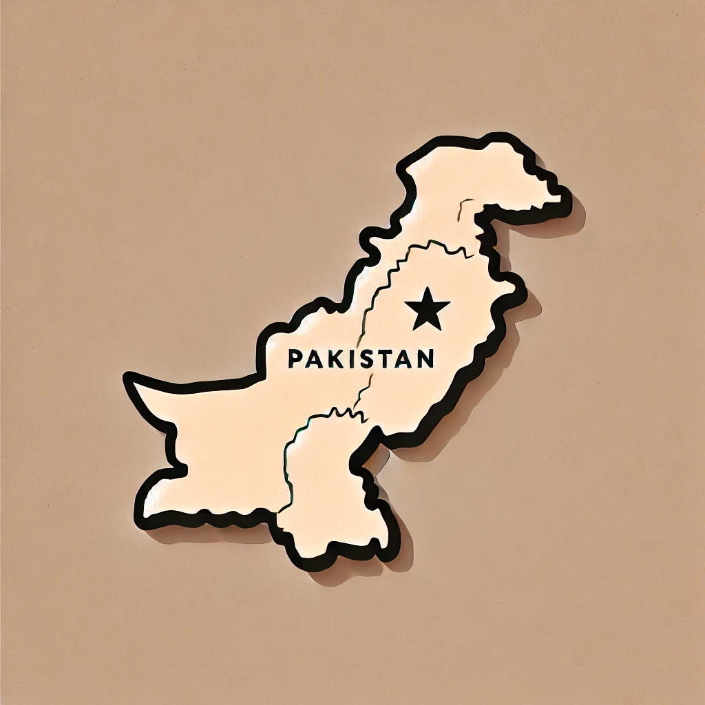

We’re about to embark on a quest to solve some major challenges for women and girls in Sindh, Pakistan.
Pick one
problem below,
and I’ll guide you through the solutions!
Most women work in agriculture with little to no control over income or assets. In fact, almost half of women in the province lack titles to land and housing, severely undermining their economic security.
Girls may be forced to leave school early to help at home, contributing to increased rates of child marriage and human trafficking in the face of poverty.

The floods left 650,000 pregnant women without healthcare and eight million women and girls without basic menstrual hygiene products.